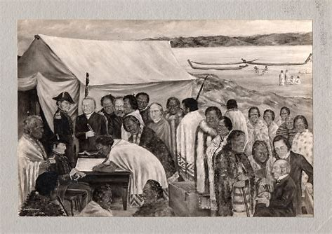

The Treaty of Waitangi is New Zealand’s founding document. It takes its name from the place in the Bay of Islands where it was first signed, on 6 February 1840. This day is now a public holiday in New Zealand. The Treaty is an agreement, in Māori and English, that was made between the British Crown and about 540 Māori rangatira (chiefs).
Treaty of waitangi

-Waitangi, one of New Zealand's most significant historic sites, is where the Treaty of Waitangi was signed in 1840 between the British Crown and more than 500 Maori chiefs. The treaty agreed the terms by which New Zealand would become a British colony.
- Not only is Waitangi engaging from an educational point of view, but it's also a very beautiful place to explore. You can take a tour(opens in new window) along the Waitangi River, ride the tracks of the Waitangi Mountain Bike Park, or explore the small semi-formal garden that surrounds the Treaty House to the 6-kilometre forest walk that leads to Haruru Falls, the natural environment is spectacular. The shoreline provides a continuously changing panorama of the bay where warriors, whalers, sailors and settlers arrived in New Zealand.